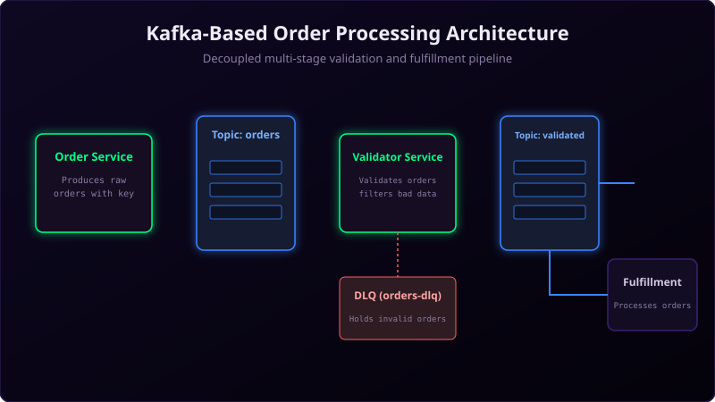

Designing a system that handles thousands of ecommerce orders per second is a classic system design interview question. In a traditional database-driven approach, heavy read/write operations on a single database can create bottlenecks and lead to data loss during traffic spikes.
By leveraging Apache Kafka, we can build an asynchronous, decoupled, event-driven order processing system that is highly scalable and fault-tolerant.

Imagine a bustling restaurant kitchen handling hundreds of orders on a Friday night:
Waiters do not run directly into the kitchen to scream orders at individual chefs. Instead, they write orders on slips and place them on a central ticket carousel wheel (the "orders" topic).
A validation chef reviews the tickets to ensure the kitchen has the ingredients (inventory check). Approved tickets get stamped and placed on the prep counter (the "orders-validated" topic). From there, separate prep chefs (consumers) slice vegetables, grill meat, and plate the final dishes (the "orders-fulfilled" topic) in parallel.
High-Level Architecture
A robust order processing system is composed of several independent stages connected via Kafka topics:
1. Topics & Partitioning Strategy
orders(raw): Receives newly placed orders from the public API Gateway.orders-validated: Holds validated orders ready for payment and shipment processing.orders-fulfilled: Stash of successfully processed and paid orders.orders-dlq: Holds malformed or invalid orders for debugging.- Partitioning Key: Use
customerIdororderId. UsingcustomerIdensures all orders placed by the same user are processed sequentially on the same partition. Assign 12 to 24 partitions to allow scaling consumer groups up to 12–24 parallel instances.
2. Safe Producers
The Order API service must write messages to the orders topic safely. Enable idempotency and all-replica confirmations to prevent double-charging or losing orders:
# Producer Properties
bootstrap.servers=localhost:9092
acks=all
enable.idempotence=true
retries=2147483647
max.in.flight.requests.per.connection=53. Processing Pipeline (Consumers)
- Validation Microservice: Subscribes to the raw
orderstopic, verifies item availability and customer accounts, and writes toorders-validated. If validation fails, it routes the message toorders-dlq. - Fulfillment & Payment Microservice: Subscribes to
orders-validated, calls the external payment gateway, charges the customer, and publishes the result toorders-fulfilled.
Type Safety with Schema Registry
To avoid bad data corrupting your downstream microservices, use Avro Schemas enforced by a central Schema Registry (like Confluent Schema Registry). This ensures that producers cannot publish events that do not conform to the predefined order model.
// Example order model instantiation and production
Properties props = new Properties();
props.put("bootstrap.servers", "localhost:9092");
props.put("key.serializer", "org.apache.kafka.common.serialization.StringSerializer");
props.put("value.serializer", "io.confluent.kafka.serializers.KafkaAvroSerializer");
props.put("schema.registry.url", "http://schema-registry:8081");
KafkaProducer<String, Order> producer = new KafkaProducer<>(props);
Order newOrder = Order.newBuilder()
.setOrderId("ord-98765")
.setCustomerId("cust-4321")
.setAmount(129.99)
.setStatus("CREATED")
.build();
producer.send(new ProducerRecord<>("orders", newOrder.getOrderId(), newOrder));Monitoring and Reliability
In production, ensure you set up alerts for:
- Consumer Lag: If consumer lag rises on
orders-validated, it means payment processing is slowing down and you need to spin up more consumer instances. - DLQ Ingestion: A rise in
orders-dlqvolume means there is a front-end input validation bypass or a major version mismatch between microservices.
Conclusion
By decoupling your order validation, payment, and fulfillment pipelines using Kafka, you build a system that can absorb massive seasonal traffic surges, process payments in a transactionally safe manner, and recover gracefully from microservice crashes.